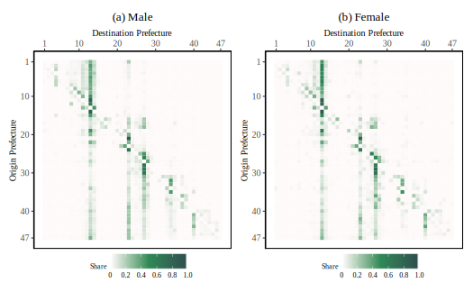
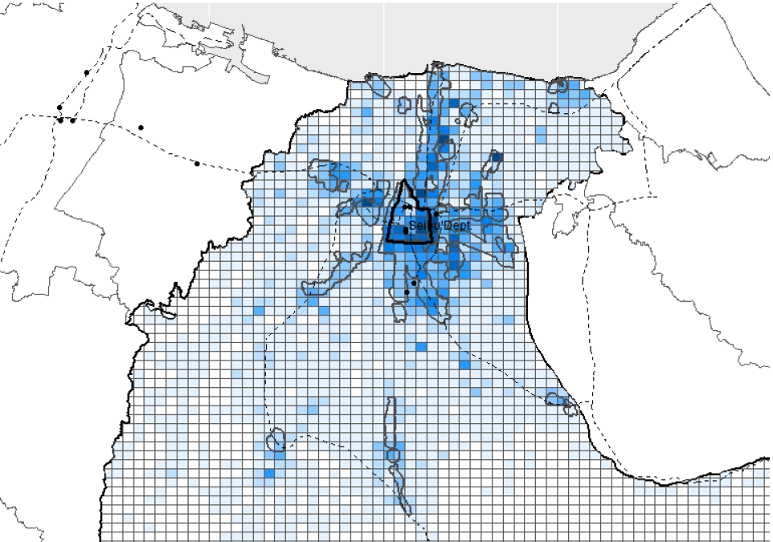

Welcome!
I am a senior fellow of the Research Institute of Economy, Trade and Industry (RIETI) and associate professor at the Research Institute for Economics and Business Administration (RIEB), Kobe University in Japan.

My research interests span across a wide variety of empirical topics in spatial economics, such as agglomeration economies and diseconomies, spatial spillover effects, local labor markets, interregional labor migration, and international trade.
Featured Research
Spatial Gaps in Minimum Wages and Job Search of Young Workers (Hamaguchi, N. & Kondo, K.)
This study examines the extent to which spatial gaps in real minimum wages affect the location choice in job search of new high school graduates in Japan. We exploit the exogenous shock related to the 2007 amendment of the Minimum Wage Act which expanded variations in real minimum wage between urban and rural prefectures. We propose Bartik-like instruments for differential exposure to these shocks to perform a causal inference of the impact of spatial gaps in real minimum wages on the location choice in job search of unskilled young workers. Our estimation results show that the real minimum wage gaps partially motivate job search outside resident prefectures. Our counterfactual evaluation for the uniform minimum wage across prefectures shows that approximately 10-25% of new high school graduates in rural prefectures seek jobs outside their resident prefectures even under the uniform minimum wage setting. This result suggests that the simple correlation overestimates the impact of minimum wage on outmigration because other factors than wages such as urban amenity may explain spatial behavior in job search.
RIETI Discussion Paper No. 22-E-022 (2022). https://www.rieti.go.jp/en/publications/summary/22030017.html
Featured Research
The Spillover Effects of Compact City Policy on Incumbent Retailers: Evidence from Toyama City (Iwata, S. & Kondo, K.)
The compact city policy of Toyama City, Japan, aims to encourage density in both the city center and suburban hubs linked by public transport systems. The policy framework relates to the place-based policy, which targets geographic underperforming zones. Several town developments projected by this policy, including the development of housing, public and commercial facilities, and public transport systems, are conducted to increase the attractiveness of the target zones. Retail revitalization is then expected as a spillover effect through increasing market size. Using a difference-in-difference matching estimation with establishment-level panel data, this paper evaluates the policy impact on incumbent retailers located in the target zones, corresponding to the treatment group. The empirical results demonstrate that while the policy effects are not observed in the short run, the policy has a positive impact on both inputs and outputs for incumbent retailers in the long run. The existing policy framework, however, does not generate positive spillover effects on incumbent retailer productivity.
RIETI Discussion Paper No. 21-E-085 (2021). https://www.rieti.go.jp/en/publications/summary/21100008.html
Previous version (in Japanese): RIETI Discussion Paper No. 19-J-069 (2019). https://www.rieti.go.jp/en/publications/summary/19120011.html
Featured Research
Spatial Dependence in Regional Business Cycles: Evidence from Mexican States (Kondo, K.)
This study investigates how regional business cycles are spatially dependent in Mexico by developing a Markov switching model with a spatial autoregressive process. The Markov switching model with two regimes distinguishes business cycles between expansion and recession phases (i.e., high- and low-growth rate regimes). The objective of this study is twofold. First, this study aims to identify which states transitioned from expansion to recession during the Great Recession in 2008–2009. Second, it numerically examines the extent to which states that experienced this transition caused a deterioration in neighboring states’ economies. Employing Bayesian inference for the Markov switching model with quarterly data of state economic activity during the period 2003:Q1–2015:Q4, this study finds that Mexican states with higher manufacturing sector shares tended to be in recession during the Great Recession. Although some states experienced economic downturns in this period, they were not in a recessionary regime. This study also finds that business cycles across states were spatially dependent during the Great Recession. The numerical simulations of spatial spillover effects suggest that states that regime-switched from expansion to recession during the Great Recession caused a reduction in the quarterly growth rate of their neighboring economies by an average of 0.39 percentage points.
Published in Journal of Spatial Econometrics, 3, Article number: 1 (2022).
Preprint version (2021). RIEB Discussion Paper Series No.2015-27
Featured Research
Simulating the Impacts of Interregional Mobility Restriction on the Spatial Spread of COVID-19 in Japan (Kondo, K.)
A spatial susceptible–exposed–infectious–recovered (SEIR) model is developed to analyze the effects of restricting interregional mobility on the spatial spread of the coronavirus disease 2019 (COVID-19) infection in Japan. National and local governments have requested that residents refrain from traveling between prefectures during the state of emergency. However, the extent to which restricting interregional mobility prevents infection expansion is unclear. The spatial SEIR model describes the spatial spread pattern of COVID-19 infection when people commute or travel to a prefecture in the daytime and return to their residential prefecture at night. It is assumed that people are exposed to an infection risk during their daytime activities. The spatial spread of COVID-19 infection is simulated by integrating interregional mobility data. According to the simulation results, interregional mobility restrictions can prevent the geographical expansion of the infection. On the other hand, in urban prefectures with many infectious individuals, residents are exposed to higher infection risk when their interregional mobility is restricted. The simulation results also show that interregional mobility restrictions play a limited role in reducing the total number of infected individuals in Japan, suggesting that other non-pharmaceutical interventions should be implemented to reduce the epidemic size.
Published version in Scientific Reports. https://doi.org/10.1038/s41598-021-97170-1
Preprint version at medRxiv (2020). https://doi.org/10.1101/2020.12.28.20248926
COVID-19 Simulator in Japan
https://keisuke-kondo.shinyapps.io/covid19-simulator-japan/
Explanation (in Japanese). Slide (PDF)